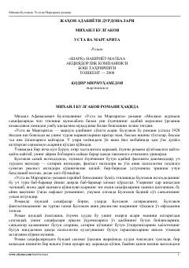

UVBulgakovning o'lmas romani: muhabbat, iblis va haqiqat haqida.
Mixail Bulgakovning 'Usta va Margarita' romani rus adabiyotining eng buyuk asarlaridan biri hisoblanadi. Roman Moskvaga kelgan iblis va uning hamrohlari, shuningdek, Usta va Margaritaning muhabbati hamda Pontiy Pilat haqidagi tarixiy voqealarni o'z ichiga oladi. Qodir Mirmuhamedov tarjimasida o'zbek tiliga o'girilgan bu asar 2008-yilda 'Sharq' nashriyotida chop etilgan.